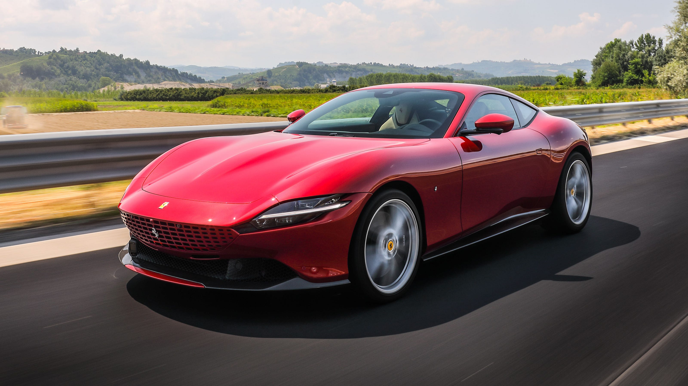
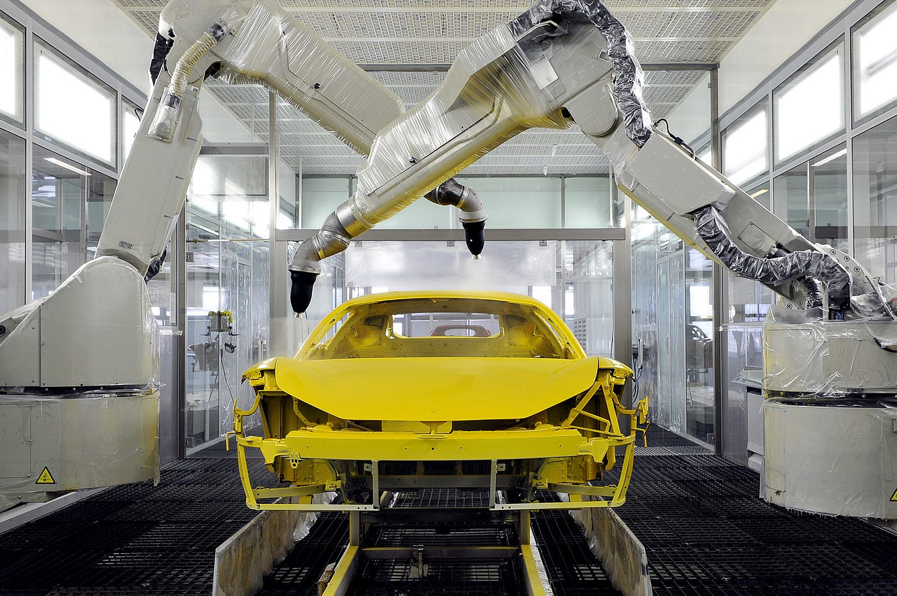

The romantic color of Ferrari Roma
Thoughts about product options and business operations


Each one of us knows what color best describes the brand Ferrari. I know it so much that I ended to believe that Ferrari only produces red-painted cars what is wrong because when you decide to buy a Ferrari more than telling to the car dealer what you want you to have the option to sit on your desktop and configure the Ferrari car you want with the options of your choice like the kind of color. This is something that Car manufacturers implemented for surfing the vague of personalization in order to better fit the taste of potential customers.
Nobody can say that personalization is not good but I am seeking to know the effect it has on brand awareness and its cost of implementation in terms of business operations. If the product or service to personalize is digital it will certainly cost less than if it is a physical one like a car. When you choose your Ferrari car to be Yellow, your order initiate a manufacturing process with the goal of building as fast and cost less it can be a car with all the options that you have chosen and as an example the color choice impact only a single production unit which is the automated or manned painting process

Here swapping the tools in order to set the robot ready for applying the yellow color you have chosen takes more time (more money) than if all cars were set to be painted in red only.
For a car manufacturer like Ferrari this switching cost due to customization is maybe not of concern because Ferrari is producing cars in limited series but for a mass car manufacturer having all cars quit the plant with the same color is a huge benefit (reduced cost of production and speed) that Ford first implemented with success.
Years after Ford, Car manufacturers tried the bad (for them ) idea of pleasing and satisfying us by introducing more colors and complexifying their industrial process to meet this goal while they had the opportunity of picking a single color that the customer could not change without calling the service of another professional. Even car luxurious high-performance sports cars manufacturer like Ferrari as crazy it can sound are the ones who are more able to apply such kind of limitation of features for the sake of business optimization and both brand awareness. Brand awareness because if everybody knows that Ferrari only produces red cars everybody should know that you called someone other to change the color of your Ferrari to this yellow color that it wears.
Are people choosing a car brand because of the colors or are they choosing them because of performance, shape, size, and energy efficiency? There are many businesses that overloaded themselves with more business operations for the sake of adding features and options that most of the time don't play into the customers’ decision process.
Then the Cost and profit-efficient product to manufacture is the product that should be marketed and branded to be accepted by consumers as it is. For example, a Ferrari car is only a luxurious high-performance RED car. This is an exercise of a new industrial paradigm that I am tempted to describe as the Minimal Cost and Effort of Production that does not hurt sales levels. Fixing all produced Ferrari to be red will for sure not hurt the sales volume of this brand and the same can be said for Tesla. For other car manufacturers, My answer is the same but they need a different approach than Tesla or luxury car brands like Ferrari.
Car manufacturers and other products manufacturers could think about this because it is good if we can build a personalized product for each of the billions person on the planet but it happens that we cannot and for saving energy resources it is better to not over personalized.
Over Personalization often leads to over-complexification of business operations which leads to an increase in the cost of production. Then before personalizing you should have a clear clue that personalization leads to sales and profit and that the revenues that it generates pay the bills of the new processes that it creates.
This is not a theory that is proven to be right but rather thought from a simple business thinking like me who can be wrong.